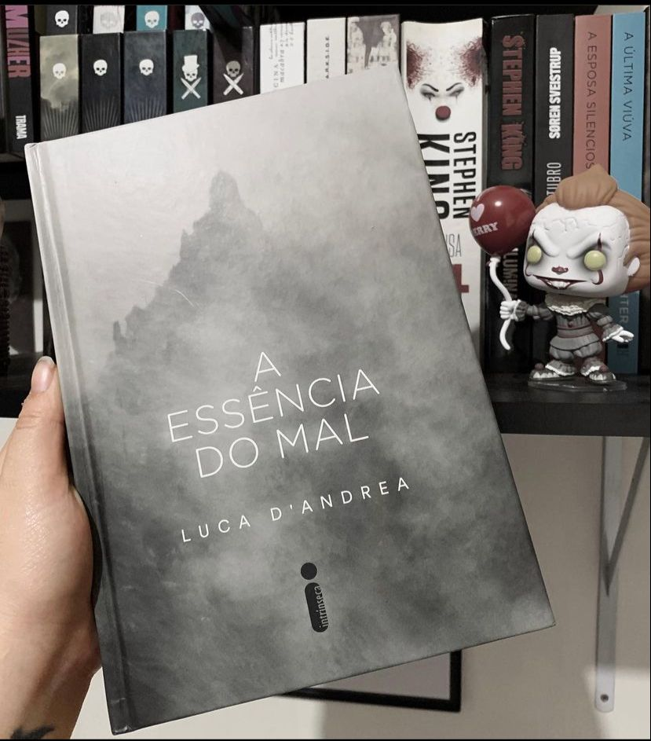

A Essência do Mal
(Luca D'Andrea - Intrínseca)
⭐⭐⭐⭐
Jeremiah Salinger ganha a vida fazendo documentários, até que se muda com a família para uma região remota da Itália. Lá, após um acidente com o helicóptero em que está fazendo uma filmagem, passa a ser atormentado pela ideia de que existe nas montanhas ao redor uma força que não consegue entender e a que chama de a Besta.Anos depois, em um passeio com a filha no Bletterbach — um desfiladeiro com toneladas de fósseis —, Jeremiah escuta uma conversa que lhe dá um novo foco na vida. Em 1985, três jovens foram mortos ali, e seus corpos, desmembrados por um assassino que nunca foi descoberto.Para solucionar o mistério, que marcou uma cidade inteira por décadas, Jeremiah mergulha em um quebra-cabeça macabro e fascinante.
O autor consegue criar um suspense muito bem elaborado no início da narrativa, da pra sentir a tensão e o incômodo desde a primeira página, o clima do livro é idêntico ao da capa da obra e vai nos acompanhar até a última linha.Todo o suspense da trama é palpável mas, o autor pecou em alguns pontos como: diálogos desnecessários, a tensão muitas vezes supera a curiosidade tornando algumas partes maçantes e algumas cenas se arrastam devagar demais.
A segunda parte do livro ganha fôlego aumentando o clima de suspense porém, com mais fluidez e somos levados a questionar o nosso protagonista e cada descoberta.
A leitura pra mim foi um misto de sentimentos como incômodo, surpresa, tédio, tudo misturado. A edição da Intrínseca é belíssima em capa dura.
Os personagens são muito bem construídos e quero dar um destaque especial a filha do protagonista, Clara que me cativou e se tornou minha personagem preferida!